Contexts
A Context is a bundle of variables provided to each operation performed by a node. Nodes need a subset of these variables to tell them which fragment of the scene or image to generate. You can add your own variables to the graph, to control the behaviour of upstream nodes.
Contexts are central to Gaffer’s processing of 2D and 3D data in a graph, as well as its deferred evaluation engine. Contexts allow nodes to deal with data in small slices rather than as a whole, and generate exactly what is needed. They are the core of every node operation. Depending on the data being processed, a typical variable inside a Context is responsible for specifying one aspect of the scene or image fragment being generated, such as:
Frame number
Scene location
Image tile
Image channel
Gaffer automatically manages Contexts during processing. These are silently passed upstream, from node to node as they compute requested data. Certain nodes can also add and modify their own variables, for use in driving graph behaviour.
There is no single interface in Gaffer for manually controlling and inspecting a Context in its entirety, but nodes like NameSwitch, Spreadsheet, and Expression can add Context-dependent behaviour to graphs, and the Python API provides methods for creating and inspecting Contexts.
Nodes and Contexts
In order to provide a background for why Contexts are necessary, we should look at what kind of workload a node would be up against without them.
Let’s consider a 3D scene. Keeping in mind how scenes are structured, imagine it is filled with hundreds of thousands of locations. Clearly, not every location can be processed at once. Gaffer needs a way to divide up the work to compute the locations one at a time.
This is where Contexts come in. In Gaffer, at no point does a node operate on the entire scene/image. Contexts break the scene/image down into digestible fragments, so each node only generates the parts that they were told to, while deferring the rest. Each computing thread has its own Context, so multiple threads may be processing different parts of the scene/image in parallel, greatly improving efficiency and performance.
{kind=link}
Figure A: Contexts allow a scene file to be processed in slices, one location at a time.
Context flow
While scene and image data flows down the graph, Contexts flow upstream.
Computation begins when a node is queried to compute a value for its output plug, by something such as a dispatcher or an editor in the interface. At the start of the computation, whatever made the request creates a Context and sets its variables to specify the target location, set, image tile, channel, etc.
The Context then passes up to any plugs that contribute to the output value. When an input plug on the queried node is connected to a plug on an upstream node, it pulls on that upstream plug to retrieve its value. If necessary, the upstream node may need to compute in turn, to produce the upstream plug’s value. This pull-compute reaction occurs up through the graph until all required plug values have been calculated to create an output value for the original queried node.
{kind=link}
Figure B: A visualization of Context and computation flow:
- A suitable Context is created. The node’s output plug is queried. The node begins computation.
- The node's in plugs are computed. If connected, they pull on connected input plugs, and pass along the Context.
- A chain reaction of plug value pulling and Context passing ensues.
- Once the last input plugs in the chain are computed, input plugs begin delivering values to the plugs that pulled on them.
- A chain reaction of plug value returning ensues.
- The out plug is computed.
Some nodes modify the variables inside the Context before they pass it upstream. One example is a node that simply adds a new variable, like a CollectScenes node, which adds a variable that contains the name of the current root location being added to the scene. Another example would be a node that changes a value, such as the TimeWarp node, which can adjust the frame variable so that the upstream nodes compute for a different part of the frame range.
Context Variables
An individual variable inside a Context is called a Context Variable. Within the graph, Context Variables are a means of wielding Contexts to drive values, and can be employed to powerful effect to iterate and optimize results.
All Context Variables reside inside their Contexts, and are assignable. Any Context Variable present in a node’s Context during processing can have its value expanded in an Expression node, or string plug with string substitution syntax.
There are a handful of special Context Variables that are worth noting, which we will informally refer to here as built-in Context Variables.
Built-in Context Variables
Built-in Context Variables are hard-coded variables that scene and image nodes read for specifying scene and image fragments to generate. These are the variables that allow Contexts to specify the smallest part of the scene/image at a time. They are declared and assigned values automatically by the node processes themselves.
For a full list of built-in Context Variables and their purposes, see the Context Variables reference.
For a scene computation, the most common built-in Context Variables present are:
framescene:path
For an image computation, the most common Context Variables present are:
frameimage:tileOriginimage:channelName
Tip
frame and scene:path will most likely be the only built-in Context Variables that you explicitly reference in plugs.
When Contexts are passed from plug to plug in a scene network, there are two facts you should remember for scene:path:
Shader networks: To improve performance, shader networks do not support the use of
scene:path, and consequently you cannot use it in string substitutions. As a workaround, you can use a CustomAttributes node to generate an attribute that varies withscene:path, and then have the shader network reference that attribute.Globals: When scene globals are computed, the
scene:pathContext Variable is not present in the Context, as location paths are not relevant.
Other Context Variables
All other Context Variables must be declared and initialized, either in the graph itself or in the Gaffer app that’s executing the graph. They can handle all the same value types as plug, such as string, int, float, vector, matrix, etc. These other Context Variables are often used to pass an arbitrary variable value upstream.
A Context Variable created at the root of the graph is referred to as a global Context Variable. Global Context Variables are always passed into all Contexts, regardless of which node is being executed. They are declared and initialized in the Variables tab of the Settings window (File > Settings…), and can be overridden in individual networks. For a list of the default global Context Variable names, see Global Context Variables.
Some nodes create and add Context Variables, such as ContextVariables, Wedge, CollectScenes, and CollectImages nodes. They each have at least one string plug that generates a Context Variable to vary upstream behaviour. For convenience, some of these string plugs have default variable names, but you can provide your own. For a list of the nodes with default node Context Variable names, see Node default Context Variables.
Contexts in action
Let’s work through a series of practical examples of wielding Contexts in scene and image networks. Each of these modify the Context to achieve a result, but all demonstrate the same principles: Contexts start at the queried node, and flow up the graph to upstream connected plugs.
Reading a Context Variable with a string plug
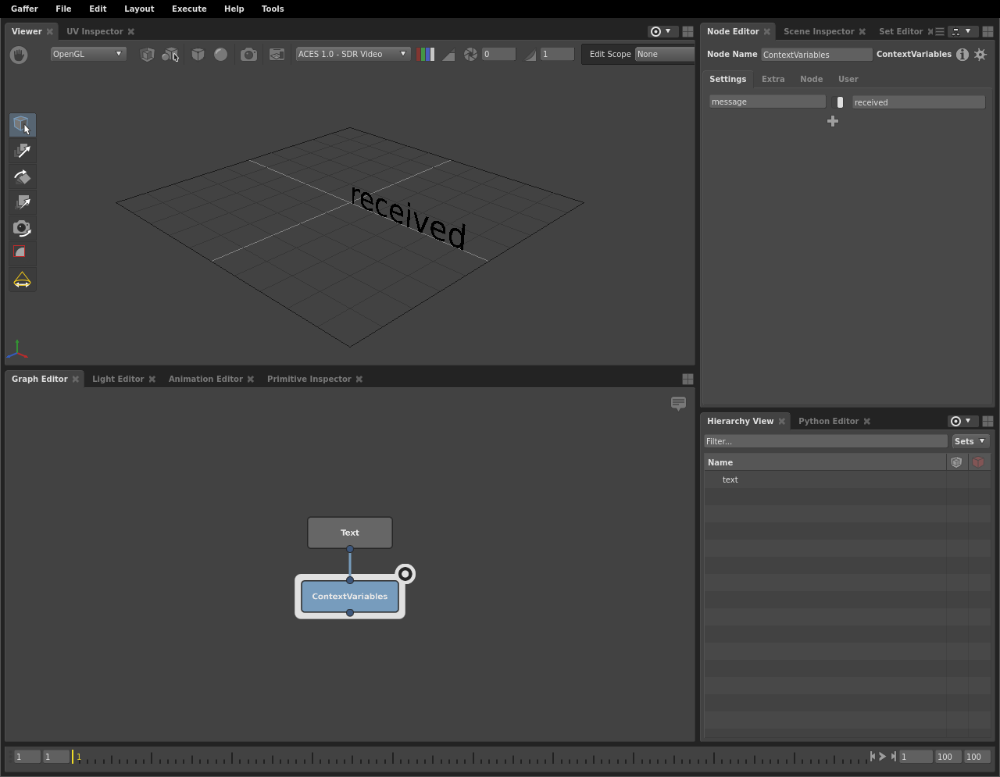{kind=link}
In this most basic example, a ContextVariables node inserts a message string Context Variable into the Context. Then, through string substitution, the upstream Text node reads the variable (${message}). When the scene is computed, the geometry displays the value of the variable: received.
Editor focus and Context flow
Let’s put Context flow into practice, and examine how editor focus can trip you up with regards to Context flow. This is a very common mistake to make when first learning how to wield Contexts.
Let’s reuse the above network, which we demonstrated by focusing the editors on the ContextVariables node. As we mentioned earlier, focusing an editor on a node queries it. Let’s see what happens when we focus on the Text node, instead.
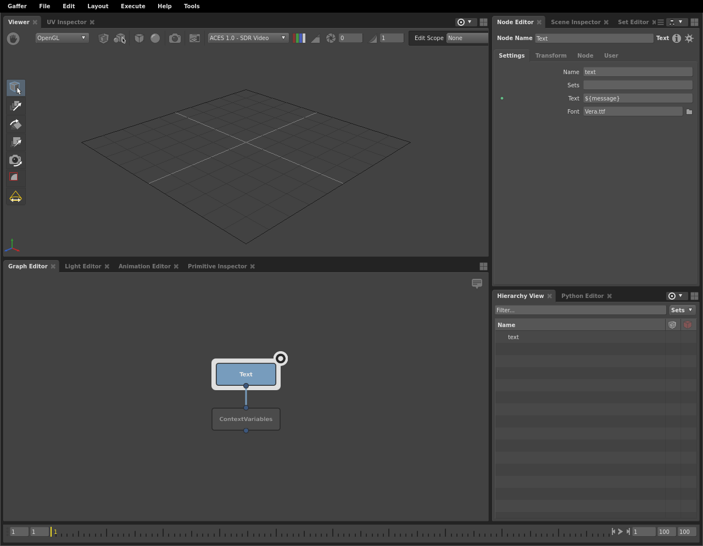{kind=link}
The editors are focused on it, but no geometry is visible. We can quickly tell that the node in fact did compute, because its location is visible in the Hierarchy View. The Text plug substituted the message Context Variable with an empty string, because it didn’t exist.
This is because the Text node cannot reach downstream to read message. Contexts start at the queried node, and then move up when computing plugs pull on their inputs. We need the ContextVariables node to compute before the Text node, so it can insert message into the Context and pass it up. In the interface, the only way to see the result of message is to query the ContextVariables node or something downstream of it. Therefore for the purposes of this network, to see the results of a successful substitution of message, we need to focus the editors on the ContextVariables node.
Context Variables in expressions
Like any other plug, when an Expression node drives a plug, that plug will pass along its Context during computation. The expression code can then read the values of the Context Variables with Python or OSL. For a full list of methods for accessing Context Variables in Python and OSL, see the Expressions reference.
Important
The Expression node does not support creating or modifying Context Variables.
In this network, we drive the vertical translation of a cube primitive with the frame number. The frame will produce a different height result when the provided Context contains a different frame value.
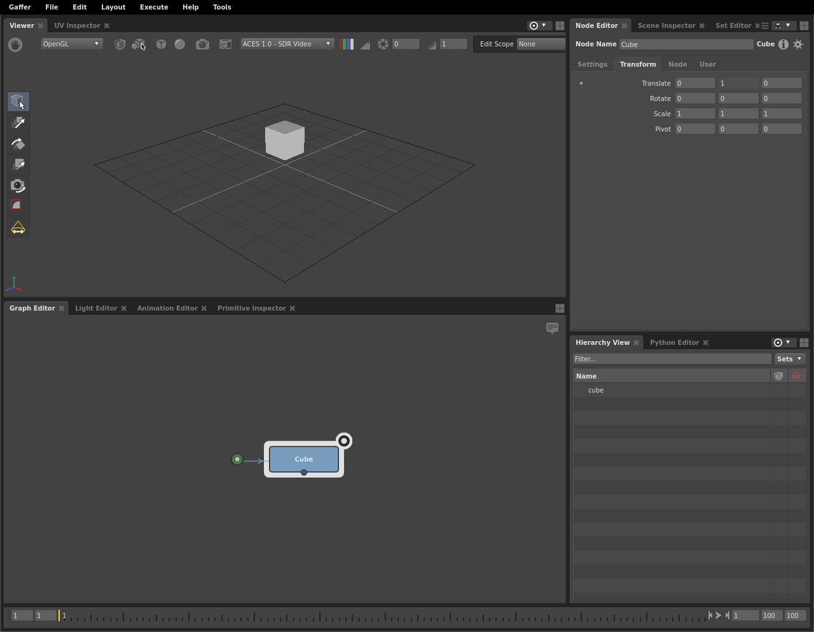{kind=link}
When the node calculates its Transform plug, for the y value of its translation, it queries the Expression node. The Expression node, in turn, calculates the frame number from the Context:
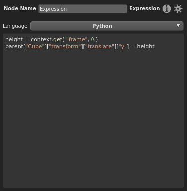Tip
In Python, since accessing Context Variables with dictionary syntax does not allow you to define a fallback value, your expression could cause errors when the Context Variable is not defined, which will usually be the case at most nodes of the graph. We therefore recommend using the context.get() method and providing a fallback value, so the method always returns a value.
Context Variables and the Random node
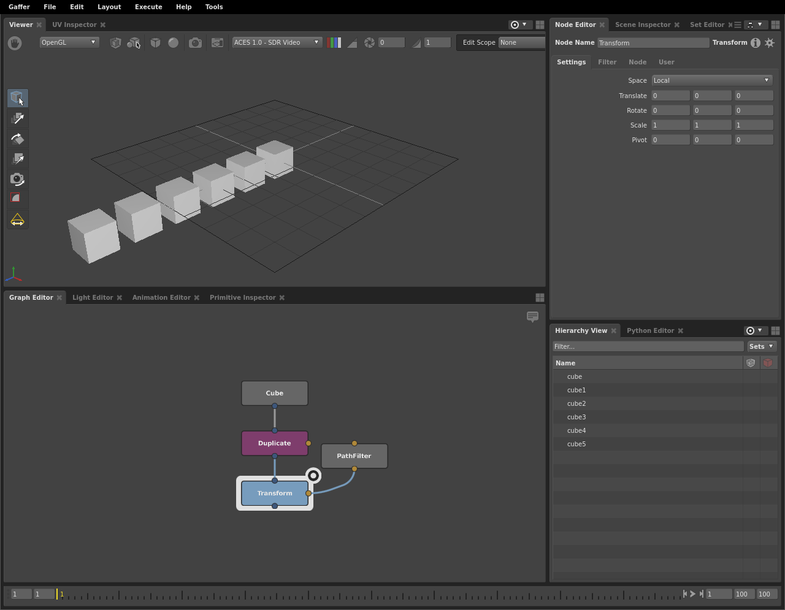{kind=link}
In this next example, a cube has been duplicated several times, with each copy translated further to the side. We want to apply a random vertical translation to each cube by adjusting a Transform node. To do this, we must drive the Transform node’s plug with a Random node, and the Random node will map a unique value to each of the scene’s paths.
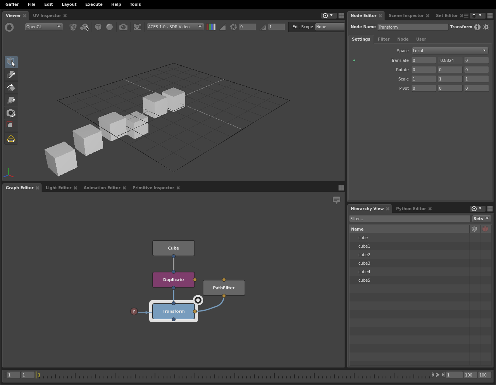 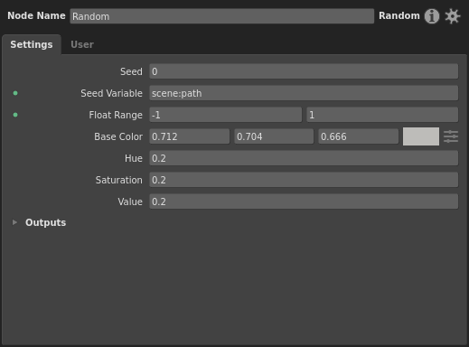{kind=link}
Here the Random node drives the y-translate of a Transform node filtered to the cubes. Its Context Entry plug targets scene:path. Set up this way, the Random node derives a random value between -1 and 1 from the current path in the Context. From there, this random value is passed to the Transform node, and translates the cube’s height.
Since each location’s path is unique, the randomized values are based on the scene:path Context Variable, and the Transform node is filtered to every location in the scene, we end up with per-location random height on each sphere.
Important
In order to provide random results that can repeatedly match the set of random values to the locations/tiles in the same order, the Random node’s values are derived from its seed in conjunction with a Context Variable in its Context Entry plug.
We should note that for this network to function properly, the connected PathFilter node must filter for every location, so it has a value of *.
Querying results with Contexts
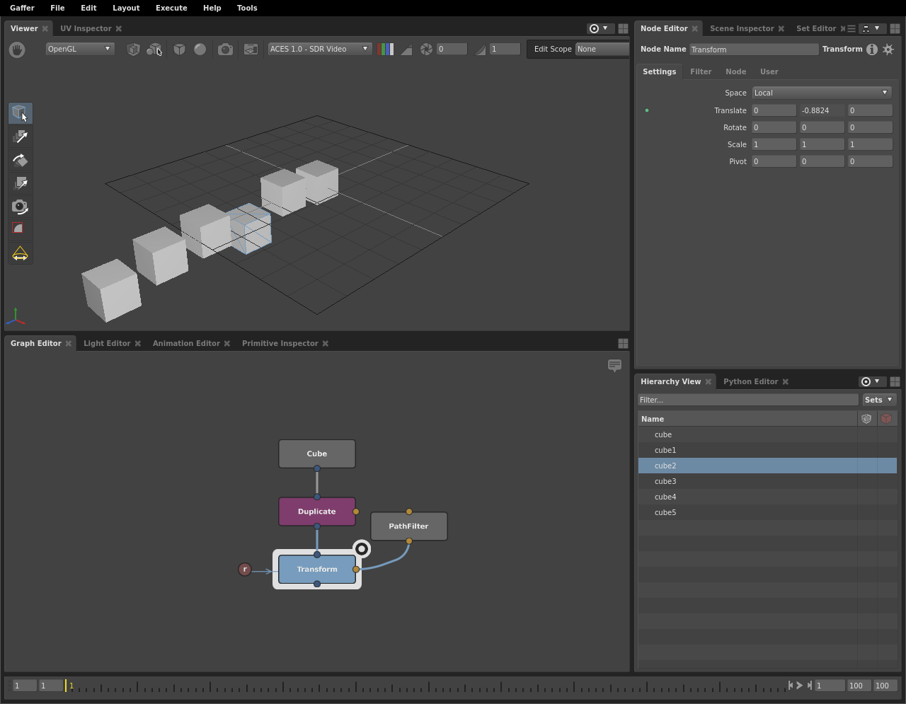{kind=link}
In the example above, we created a plug value that varies across Contexts via scene:path. As such, you won’t be able to see the plug’s actual values used during computation. This is because the Node Editor can only display one plug value at a time, and generally does so using the graph’s global context. But, it is sometimes essential to know the exact value of a plug given a particular Context.
You can do this with the Python API, by establishing a temporary Context and then querying the plug given a specific value of scene:path.
First, let’s try querying the y-translate value for the Transform node from the previous example in the Python Editor:
print( root["Transform"]["transform"]["translate"]["y"].getValue() )
This simply gives us a height passed by the Random node with a blank location, which none of the cubes actually use. What we need is a statement along the lines of “given the cube at location X, what height is the transform?” In fact, the following code effectively does that, by first creating a Context and then querying the plug in it:
context = Gaffer.Context( root.context() )
context["scene:path"] = IECore.InternedStringVectorData( ["cube2"] )
with context:
print( root["Transform"]["transform"]["translate"]["y"].getValue() )
The translate value of the plug matches the cube’s height as seen in the Scene Inspector:
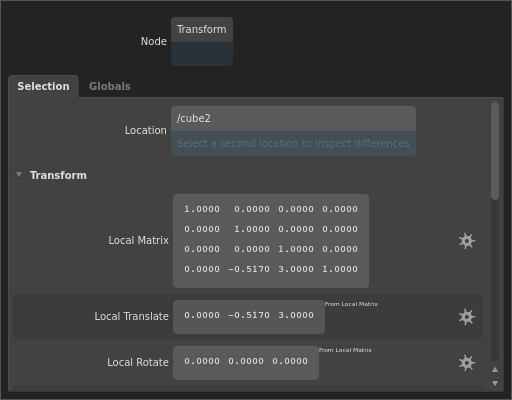Observe that we first established scene:path, which uses the InternedStringVectorData type, and that the path itself doesn’t contain a forward slash (/).
Contexts in parallel branches
When two plugs in parallel branches are driven by a shared input plug, their Contexts are not shared with that input plug. During computation, each branch is processed in isolation. Take, for example, the following network:
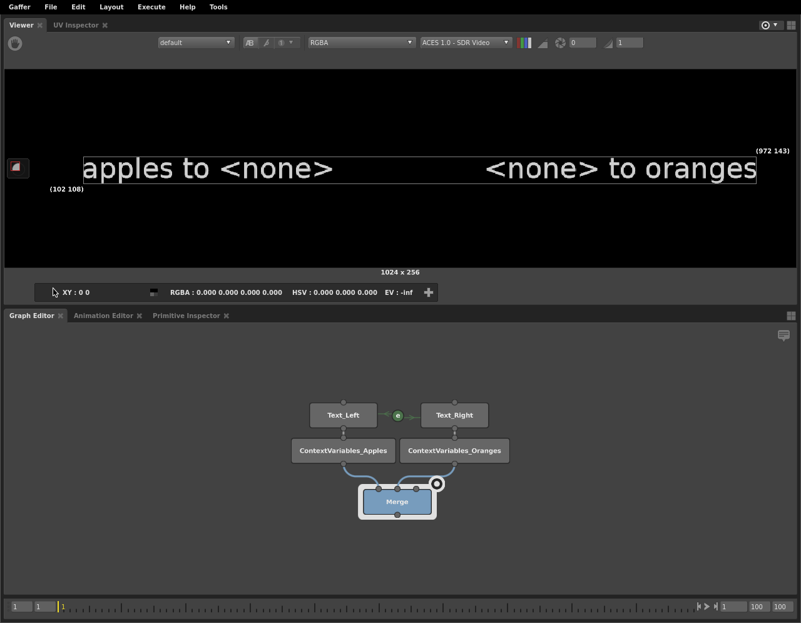 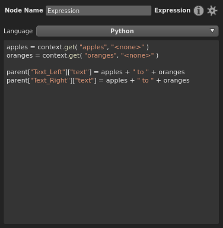{kind=link}
The Text plug of both branch’s Text node is driven by a single Expression node. Despite the expression code making calls to both Context Variables, it only substitutes the one that is present in the Context in the branch that is currently computing. When the left branch is computed, only apples is defined, so only it returns its proper string. Conversely, when the right branch is computing, only oranges is defined, so you only see its string.
The same principle applies when the branches are split at the bottom. In this next image network, the image is overlaid with author and description text if versionAuthor or versionDescription Context Variables are defined.
{kind=link}
When the ImageWriter_DailyOverlay node on the left is executed, the Context Variables are added to the graph, and Expression node substitutes the text. When the ImageWriter node on the right is executed, the text is empty, because its branch isn’t connected to the ContextVariables node.